APEX · Holistic UX review · 17 October 2026
The primitives are good, and they barely reach.
Almost every pattern this dashboard needs already exists somewhere in it, used once or twice while the other surfaces reimplement it locally — and the local copies are where the defects live. The second theme is that the product states facts it has not established.
17 October 2026 · consistency · thoroughness · correctness · ease of use · accessibility
Verdict: the primitives are good and barely reach. Almost every pattern this dashboard needs already exists somewhere in it — a tabs component with a real keyboard contract, a dialog with a careful inert stack, a --modal-backdrop token, a navigation guard, a type-to-confirm, a pessimistic gate machine that handles two operators colliding exactly right. Each one is then used in one or two places while the other twenty surfaces reimplement it locally, and the local copies are where the defects live. The second theme is that the product states facts it has not established: a failed run shows its failing phase as Pending, a run with no collected results is ranked the best in a comparison, a test result is published before execution finishes, and every approval in the system is attributed to unknown.
Nothing here argues for a redesign. The work is to make the existing primitives the only way to build a surface, and to make every status the UI prints trace to a fact the API actually returned.
What was reviewed
| |
|---|
| Routes | 36 of 36 reached at least once; 33 exercised in depth |
| Findings | 120 (5 sweeps + the lead reviewer), of which 34 independently re-verified |
| Captures | 61, registered in capture-register.json |
| Data modes | demo (ACC add-a-line v2.0) and connected (simulated engine, 39→50 seeded runs, 17 live gates) |
| Roles | viewer, operator, project-scoped admin, global admin — all four exercised against the real API-key gate |
| Themes | all six, plus the system preference |
| Viewports | 390 · 768 · 1440 · 200% zoom |
Detail lives in seven companion documents: LOAD_CONVERGENCE.md, CONSISTENCY.md, CORRECTNESS.md, ACCESSIBILITY.md, AGENT_UX.md, AREAS.md and LEAD_FINDINGS.md, with VERIFICATION.md recording what survived an independent reproduction pass.
How this was set up
Connected-mode work ran against a production build behind a same-origin proxy reproducing the deploy contract in apps/dashboard/README.md — SPA fallback, /v1 proxied, the /runs HTML-vs-API split keyed on Accept, unbuffered SSE. This matters: apps/dashboard/.env.development.local sets VITE_APEX_DEV_AUTH=true, which auto-authenticates an admin and would have made the role and scope findings impossible. A second isolated origin was used for role switching so sessions did not collide.
The findings that matter
1. A keyboard trap in the prompt gate that silently rewrites the prompt — P0, WCAG 2.1.2
Thirteen Tabs from the run title reach the system-prompt editor. Six more do not leave it. They are swallowed by CodeMirror and inserted as indentation: the prompt grew 735 → 747 characters and now begins with twelve leading spaces, and the primary action flipped from ▶ Execute Phase to Save Edit & Re-review. Escape then Tab does escape — onto the Save button, so the next keystroke commits the corrupted prompt as a human-authored override. No hint anywhere advertises Escape, which is why 2.1.2 fails regardless.
One missing prop: <CodeMirror> in PromptTabsEditor.tsx is mounted without indentWithTab={false}, and @uiw/react-codemirror defaults it to true. Output gates are clean. (A11Y-04, confirmed by the lead and by verification. Capture a11y-03.)
2. Every approval is attributed to "unknown" — P1
The APPROVALS panel renders, verbatim: PROMPT_REVIEW · APPROVE · unknown · Oct 17, 01:25:25 PM. The API agrees — actor: "unknown" on every record — though the decisions were made over an authenticated session whose consumer the backend resolves on every request. revise and discuss are not recorded in approvals[] at all, so a reviewer cannot see that a human sent the agent back. The governance reviewer's first question has no answer anywhere in the product. (L-01.)
3. The product states facts it has not established — P1
Five instances of one root cause: a value is printed as settled when the underlying data is absent, pending, or contradicted.
- A failed run shows its failing phase as "Pending", keeps a SNAPSHOT REFRESH ACTIVE chip on a terminal thread, and uses "yet" in three places. The failure reason is unreachable in the UI. The snapshot carries that phase as
running in phase_strip and pending in phase_results; the UI picks the most innocuous of three. (R-01, COR-06 — the two sources disagree on 18 of 45 runs.) - Compare ranks a run with no collected results as the best run.
run-aborted reads ORCHESTRATION FAILED / EXECUTION FAILED / RESULT FAILED, yet supplies p95 0 ms and error rate 0.00% as a green-tinted Baseline while the two runs that completed are tinted pink and labelled Worse. The delta text says "percentage not available" — the code already knows that baseline is not a measurement. (COR-02. Captures 14, corr-07.) - "Test result: Failed" before execution finishes, on a run awaiting a gate whose own button says it "does not approve the test result". (COR-03.)
- Home reports failure three times with three numbers over one 39-run fleet: FAILURES 4, Test Results Failed 0, Execution Health Phases failed 0. The red tile ORs orchestration errors with test failures; the panel beside it counts test failures only. (H-01.)
- "7/7 phases finished" on a failed run, because finished counts failed, aborted and skipped. (COR-05.)
4. Irreversible actions are protected in inverse proportion to their cost — P1
| Action | Reversible? | Protection |
|---|
| API key creation | No | Dialog, "never shown again", Copy, a checkbox that gates the confirm button, and a navigation guard |
| Abort a run | No | btn-danger + type ABORT |
| Skip a phase | No | One click. Secondary styling. No confirmation. |
| Edit a prompt at a gate | No | None. One click on another queue row discards it silently. |
| Cycles review actions (5) | approve: no | One unconfirmed click each |
The app ships a priority-ordered NavigationGuards system. Exactly four surfaces register one — three in Cycles and the API-key dialog. Nothing in hitl/, runs/, approvals/ or new-test/. The product protects an unrecoverable secret perfectly and an operator's hand-written prompt not at all. (G-01, G-02, ARE-10. Captures 10, 11, agent-06.)
5. The operator cannot launch anything, and the wizard never says so — P1
| Identity | POST /v1/pipelines |
|---|
| viewer | 403 Requires role 'operator' or higher |
| operator (seeded, unscoped) | 403 pipeline scope is not authorized |
| admin | 201 |
Signed in as that operator, /runs/new serves all six steps and a search for not authorized / permission / denied / forbidden across the page matches nothing. The mismatch runs both ways: a project-scoped admin is refused catalog mutations by the UI (isGlobalAdmin requires scopes.length === 0) but accepted by the server — POST /v1/catalog/applications returned 201. Cycles has the same defect in the first direction, where a 403 renders as 404 "Cycle not found". (P-01, P-02, ARE-13. Capture area-08.)
6. Error banners render unstyled on most routes, depending on navigation history — P1
.tonal-card and its .warning/.danger modifiers are defined only in features/runs/run-detail.css, imported by one module, while 27 call sites across 18 modules use the class — including the shared CachedDataWarning and Home. Measured on a cold load of /prompts: no matching CSS rule exists and a probe element computes to no border, transparent background, zero padding. Visit a run detail page, return, and the identical banner renders bordered and pink. vite.config.ts:77 sets test.css = false, so no unit test can catch it. (CON-01, confirmed by CSSOM probe including the intermittency.)
7. Nothing is announced — P1
RunRail holds the only role="status" gate banner and no route renders it; LiveStatusChip declines to be a live region in a source comment because "the run rail's gate banner owns that landmark". Five gate changes produced zero live-region mutations. Gate openings, phase changes and stream-status changes are all silent. The approvals queue is a correct listbox with a correct roving tabindex whose selection never takes focus, so j/k swap the entire workspace and a screen-reader user hears the new run's title and nothing else — not queue position, not gate kind, not how many remain. (A11Y-06, A-01.)
8. The contract's primitives reach one or two surfaces each — P1/P2
TabList covers 2 of 11 tablists. .ux-filters covers 1 of 18 tables. The Rows control covers 1 of 5 paginated tables. Sortable headers, 1 of 18. --modal-backdrop is defined in all six themes and consumed zero times while 7 dialogs hard-code three different black scrims. Seven of the eleven tablists have no aria-controls, no roving tabIndex and no arrow keys; six have no role="tabpanel" anywhere. (CON-02, CON-06, CON-11.)
9. Orchestration froze while Load moved on
The token sheet was ported verbatim from APEX Load (ADR-0006) and has not tracked it since. Load declares 103 theme tokens to Orchestration's 77 — 34 Load-only, and 130 value divergences across the shared ones. The light theme is now a different product: 54 of 57 shared tokens differ, Load having replaced indigo glassmorphism with an opaque cobalt palette. Load went flat (killing the mesh gradient and frosted top bar Orchestration still paints), went sentence case (309 text-transform declarations routed through --label-case, against Orchestration's 63 hard-coded uppercase and zero uses of the token), and built a six-step type scale Orchestration lacks entirely — against 372 literal font-size declarations spanning 20 values including 9px. Orchestration has no global styling rule for select, input or textarea, so native OS widgets render light over the dark themes; color-scheme is normal in every theme. (LOAD_CONVERGENCE.md, A11Y-14.)
Convergence is not wholesale: keep TabList (Load has no shared tab component and Orchestration's keyboard contract is better), keep the chart axis/grid wiring, and adopt --accent-text before reverting --accent, or ~160 accent labels drop below 4.5:1.
10. Contrast and colour-only encoding
.dash-badge hard-codes color: white instead of --accent-contrast — 2.98 / 2.19 / 2.04:1 across the three dark themes, and 99 of 140 axe nodes from that one declaration. Chart series are encoded by colour alone and no series pair reaches 3:1 in any theme, several measuring exactly 1.00:1. The prompt version diff renders changed lines at 1.11:1 and 1.16:1 — blank bars. (A11Y-01, A11Y-03, ARE-24.)
11. Cycles is not production-ready
Never reviewed before and absent from PARITY.md. The data model, preflight-blocker engine and deliverable versioning are better than most of the app, but it ships three self-declared non-functional sub-features ("Cycle dispatch is not enabled", "Retrieval connectors are not available in this editor yet", "Publication is not configured"), all five review actions fire unconfirmed, archive renders before submit, the working navigation guard is bypassed by its own "Cancel editing", and two of its three dialogs render unstyled native buttons. (ARE-10…21.)
12. Test Presets has been unreachable for over a month
POST /assistants/search returns HTTP 500, direct and proxied, while /v1/pipelines returns 200. The 2026-09-14 resources audit recorded the identical failure. (ARE-07.)
What this product gets right
Worth protecting, because several of these are better than the surfaces around them.
- Two operators colliding on one gate is handled correctly. The loser gets "Decision was completed elsewhere", the row greys, the badge decrements, and the API records exactly one approval. Nothing is decided twice. This is ADR-0006's pessimistic resume working as specified.
x arms a typed confirmation rather than aborting, and approve/skip are deliberately never bound to bare letters — documented as a decision in gateModuleContract.ts.- Run detail's header separates four facts: orchestration status, test result, phase progress, and a Test acceptance panel stating plainly that completing orchestration does not certify a release.
- Prompt provenance is shown where the decision is made —
catalog · phase/story_analysis/system@v1 with "Prompt source: catalog" and a Tools in Play panel. - Re-run preflight explains its own rule and adapts rather than refusing: deselect Execution and the Reporting row becomes "Will reuse Execution artifacts (attempt …)".
- The one-time API key dialog is exactly proportionate to an unrecoverable secret.
- The live-transport status model is six named states with distinct labels, kept separate from orchestration status.
- The durable transcript path works end to end — every phase, 200
text/plain, rendered with a TRANSCRIPT chip and Download. Dialog is used by all 23 dialogs with a genuinely careful inert stack, and ProblemCard reaches 41 sites. Deciding against toasts was right.- Chart palettes are token-driven and capped at 5+other, so they never wrap.
- The wizard's step tabs are fully compliant —
aria-controls, roving tabIndex, Arrow/Home/End, hidden panels. This is the model the other ten tablists should copy.
Top 10 fixes, ranked by user impact against effort
| # | Fix | Impact | Effort | Findings |
|---|
| 1 | indentWithTab={false} in PromptTabsEditor.tsx | Removes a P0 trap that silently corrupts agent prompts | One prop | A11Y-04 |
| 2 | Move .tonal-card into theme/primitives.css and add .success | Restores every error banner on 21 of 36 routes | One file move | CON-01 |
| 3 | .dash-badge → var(--accent-contrast) | Clears 99 of 140 axe nodes | One line | A11Y-01 |
| 4 | Record the authenticated consumer as the approval actor, and record revise/discuss | Makes governance audit possible at all | Backend + render | L-01 |
| 5 | Derive phase status once, with thread_status as an input; suppress live chips and "yet" copy on terminal threads | Stops a failed run reading as pending, in every surface at once | One normaliser | R-01, COR-06, COR-05, AGT-05, AGT-08 |
| 6 | Gate KPI participation on execution having succeeded; exclude uncollected runs from ranking and baselines | Stops compare recommending the failed run | Small, local to compareModel.ts | COR-02, COR-12 |
| 7 | Confirm Skip Phase; register a navigation guard on the gate editor and keep the dirty buffer per interrupt_id | Closes the two unprotected irreversible paths | Reuses existing components | G-01, G-02 |
| 8 | Resolve launch capability from scopes, not role; mirror the server's two distinct refusals | Stops operators authoring tests they can never run | Auth shaping | P-01, ARE-13 |
| 9 | Adopt Load's typography.css, --label-case, --modal-backdrop, the six form-surface tokens and color-scheme | Closes most of the convergence gap and the native-widget bug in one pass; pure CSS | Token file + sweep | LOAD, CON-06, A11Y-14 |
| 10 | Focus the selected li[role=option] on j/k; announce gate/phase/stream changes in one live region | Makes the approver queue usable with a screen reader | Small | A11Y-06, A-01 |
Fixes 1–3 are single-line or single-file and together clear a P0 and the two widest-blast-radius defects in the review. Fix 5 is the highest-leverage change in the list: one normaliser resolves findings across five documents.
Per-area scorecard
1 = unusable · 3 = works with friction · 5 = exemplary.
| Area | Consist. | Thorough. | Correct. | Ease | A11y | Note |
|---|
| Home | 2 | 3 | 1 | 3 | 2 | Three failure numbers for one fleet; no test-result column |
| Tests / run list | 3 | 4 | 3 | 3 | 2 | Two columns headed "Run"; PROGRESS carries no phase state |
| Run detail | 3 | 4 | 2 | 3 | 2 | Best four-fact header in the app; terminal states wrong below it |
| Compare | 2 | 3 | 1 | 3 | 2 | Ranks a failed run best; "Not running" erases outcomes |
| HITL — gates & inbox | 3 | 4 | 3 | 3 | 1 | Concurrency exemplary; P0 trap, no announcements, unguarded edits |
| New Test wizard | 3 | 3 | 2 | 3 | 4 | Step tabs are the app's best; readiness contradicts itself |
| Prompts | 3 | 4 | 3 | 3 | 2 | Diff unreadable at 1.11:1; create silently activates |
| Golden Configs | 2 | 1 | 2 | 2 | — | Unreachable in connected mode for over a month |
| Cycles | 2 | 2 | 2 | 2 | 2 | Strong model, unsafe lifecycle, three dead sub-features |
| Resources | 3 | 3 | 3 | 3 | 2 | Steady; dead context_summary_ids capability |
| Analytics / Logs | 2 | 2 | 1 | 2 | 2 | Phantom model facet, buckets a day early, gate wait as latency |
| APEX Load workspace | 2 | 2 | 3 | 2 | 2 | Operator destination behind an admin-only route |
| Admin / Settings | 4 | 4 | 3 | 3 | 3 | Key lifecycle is the best-protected flow in the product |
| Shell / theming | 2 | 3 | 3 | 3 | 2 | Six themes, 130 token divergences from Load, no type scale |
Axis totals: consistency 2.6 · thoroughness 3.0 · correctness 2.2 · ease of use 2.8 · accessibility 2.2. Correctness is the weakest axis and the one that most damages trust, because every instance takes the form of the UI sounding more certain than its data.
Coverage
Walkthroughs
| Walkthrough | Status |
|---|
| a | New test, draft → Review; abandon and resume | ✓ |
| b | Prompt gate: approve · modify+approve · skip | ✓ |
| c | Output gate: revise · discuss · approve | ~ revise and approve done; multi-turn discuss not exercised |
| d | Clear 5+ gates keyboard-only (j/k/o/m/x) | ~ shortcuts verified, 3 gates cleared; m is broken on the canonical review URL |
| e | Live run: stream, kill transport, reconnect, jump-to-live | ✗ blocked — see below |
| f | Concurrency: same gate in two browsers | ✓ passes |
| g | Re-run one phase through preflight, missing prerequisite | ✓ passes |
| h | Compare two runs against a chosen baseline | ✓ |
| i | Prompt catalog: edit, version, diff, roll back, playground | ✓ |
| j | Work items: NL query → edit → run → save → modify | ✓ |
| k | Admin: consumer, key shown once, rotate, connection, host mappings | ~ consumer/key/connections done; host mappings not exercised |
| l | Governance audit of a finished run | ✓ — and it fails, see finding 2 |
| m | Hand off to APEX Load and back | ✗ no Load connection configurable in this environment |
Routes
33 of 36 exercised in depth. Not reached, with reasons:
/golden-configs/:assistantId — POST /assistants/search returns 500 (ARE-07). The list page's error state was reviewed instead./work-items/:provider/:itemId — no work-tracking provider bound in this environment./apex-load beyond its unconfigured state — no Load console URL configurable, which also blocks walkthrough m and the handoff contract.
Could not be verified, and why
- Live streaming, reconnect, jump-to-live, event loss/duplication. No live stream could be established in either data mode. In connected mode
useActiveRun polls for a run id every 5 s and a simulated phase finishes in under 8 s; in demo mode /runs/run-active reads RUNNING and EXECUTING while its Pipeline Log says "No live activity for this phase yet" and no jump-to-live control exists in the DOM. The reconnect machinery reads correct in source and the correctness sweep separately confirmed the snapshot-is-canonical invariant holds — but the UI path was never exercisable. With a real engine, phases run for minutes and the poll would attach, so the connected-mode severity is environment-dependent; the demo-mode failure is not. - The 2026-09-14 "rerun expands scope by default" finding — retesting needs a completed subset run, which this environment could not produce. Reported as not retested, not as fixed.
aborted phase state — exists in neither dataset.- Real provider integrations, external ticket creation, production auth expiry — all stubbed.
- MinIO is gone from Docker Hub, so the compose artifact store could not start; Postgres and Redis were run alone and the
minio-artifacts connection disabled through the admin UI.
Corrections applied after independent verification
| Claim | Outcome |
|---|
A11Y-05 — j/k dropped at triage speed | P1 → P3. The stale-stateRef race is real in code, but at 0/5/10/16/25/30/120 ms all six presses land. Real keystrokes are 1:1 |
A11Y-09 — 14 option rows each tabIndex=0 | P2 → P3. False: measured 1 × 0 and 14 × -1, a correct roving tabindex |
CON-02 — .engine-metric-tab "fails SC 2.5.8 outright" | Deleted. Measured 23.00 px with 56.87 px between centres: passes on the spacing exception |
LOAD — --modal-backdrop "declared twice" | Six times, one per theme. Zero consumers either way |
| CON-04 — 404 stylesheet "flattens ~40 empty states" | P2 → P3. The unscoped redefinition is real; computed styles are identical before and after |
A-01 — j/k "never move DOM focus" | Restated. Focus sits on h2.run-detail-title, not main. It never enters the queue, which is the real defect |
| CONSISTENCY — "~240 live regions" | 185 |
Two things chased and dismissed: two extra none→succeeded runs that looked like they realised COR-06's hypothetical counter divergence are neutralised by phases_plan, and the connected fleet has drifted to 50 runs while GET /v1/pipelines caps limit at 20, so full enumeration needs pagination.
Prior work
Findings already recorded in docs/qa/ux-audit-2026-09-09, product-review-2026-09-09-round-2, the four *-2026-09-14 audits, docs/dashboard-usability-remediation.md, design-qa.md, and PARITY.md's known partials F3/F4 are not repeated here. Those audits each declined to certify screen readers, per-theme contrast, full keyboard traversal, zoom, reduced motion, role and scope matrices, multi-operator concurrency, and UI-versus-API correctness — which is most of this review's ground, so overlap is low.
Three regressions against work marked complete are reported with citations: comparison phase normalisation and missing-result rendering (dashboard-usability-remediation.md lines 7, 9, 42 → COR-01, COR-04, COR-06, COR-12); the Test Presets 500, unchanged since 2026-09-14 (ARE-07); and PARITY.md row 3a's claim that the runs grid carries a phase-strip micro-viz, which is now dead code (AGT-15).
Scope limits
A design and correctness review, not a WCAG conformance certification. No application, backend or package.json code was changed. Artifacts left in the connected environment: one cycle, two unlaunched wizard drafts, one saved query, one prompt rolled back to v1, and roughly 50 seeded pipeline runs. One probe application created during the scope test was deleted; the catalog holds ACC only.
Capture register
Capture 01 · Mixed
Home — demo mode
Observed: ACC add-a-line dataset at 1440x900 in apex-light. The attention rail, four metric tiles, Execution Health and Test Results all render, but the tiles, the health panel and the results panel each name a different population: 'in the loaded recent runs', 'Last 7 days, across accessible projects' and 'up to the latest 50 loaded runs'.
Recommendation: State one population per screen, or caption every panel with the same one.
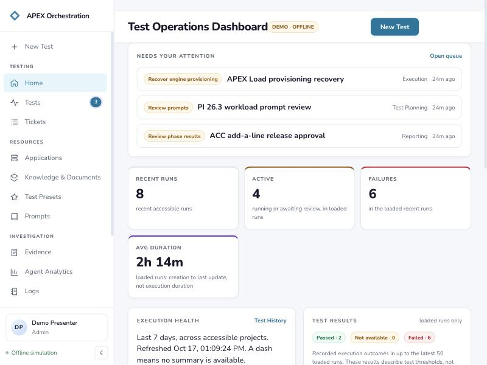
01-home-demo-apex-light.jpgCapture 02 · Needs landmarks
API key gate
Observed: The production build's real gate at 127.0.0.1:4175. axe reports no main landmark and content outside landmarks. There is no theme control here, and a first-time browser always renders apex-light regardless of prefers-color-scheme.
Recommendation: Wrap the gate in <main>; make 'system' the default theme preference.
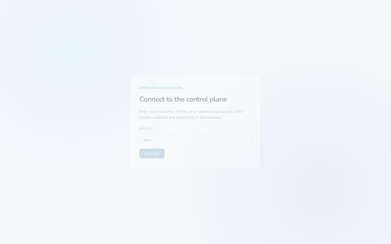
02-apikey-gate-connected.jpgCapture 03 · Contradictory
Home — failure counts (H-01)
Observed: One viewport, three failure numbers over an identical 39-run fleet: FAILURES 4, Test Results 'Failed 0', Execution Health 'Phases failed 0'. The API reports execution_result null for all 39 and thread_status error for 4.
Recommendation: Split the tile into 'Orchestration errors' and 'Test failures'; render unknown phase data as an em dash, not 0.
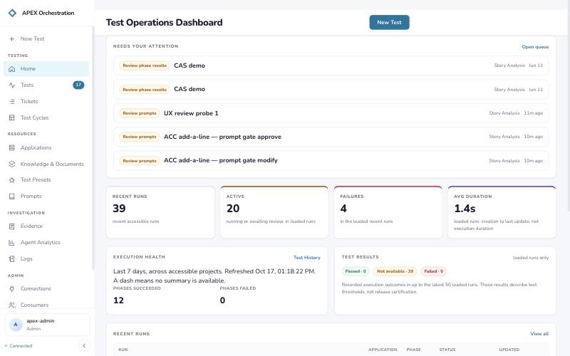
03-home-connected-failure-counts.jpgCapture 04 · Needs a reason
Run detail — failed run (R-01)
Observed: ORCHESTRATION FAILED with 'Test result: Not available' and a Test acceptance panel that correctly states orchestration completion does not certify a release. No failure reason appears anywhere. Header says Application 'Not selected'; the Run context panel beside it says 'Not recorded'.
Recommendation: Surface the run-level error on the Overview card; use one string for a missing application.
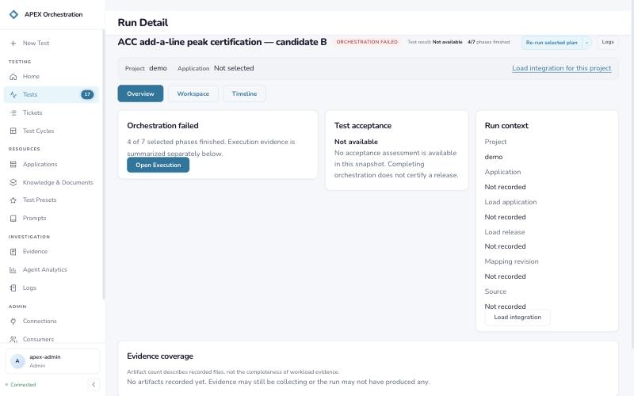
04-failed-run-overview-no-reason.jpgCapture 05 · Incorrect
Phase detail — failing phase (R-01)
Observed: The phase that stopped the run reads 'Execution — PENDING' while the header reads ORCHESTRATION FAILED, a 'SNAPSHOT REFRESH ACTIVE' chip is live on a terminal run, and three strings use 'yet' or present continuous.
Recommendation: Derive phase status with thread_status as an input; suppress the live chip on terminal threads; make the 'yet' copy conditional.
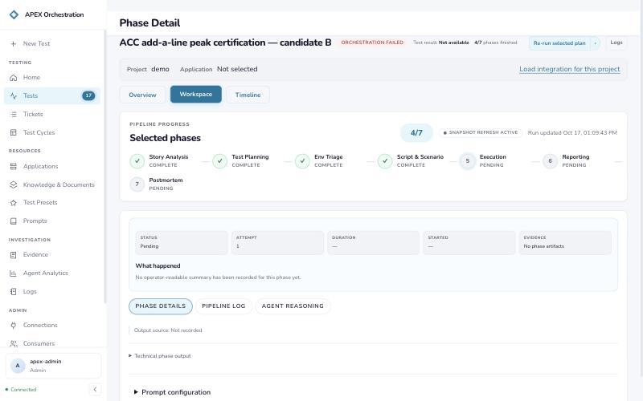
05-failed-run-execution-shows-pending.jpgCapture 06 · Accurate, no exit
Approvals — shortcuts overlay (A-05)
Observed: role=dialog, aria-modal, labelled, and focus moves into it, but it contains no focusable element and no close control. The documented shortcuts are correct, including 'x — Arm abort confirmation'.
Recommendation: Add a close button, matching the navigation drawer's pattern.
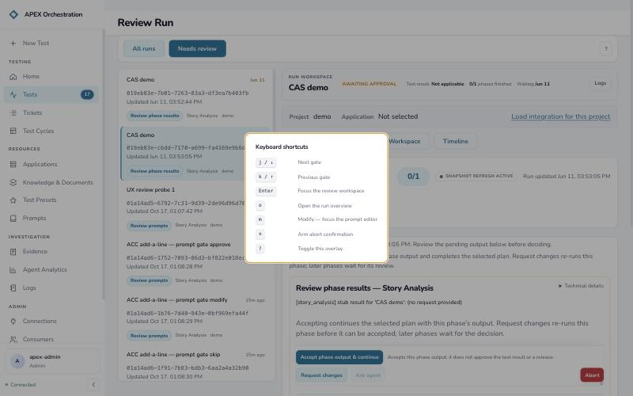
06-approvals-keyboard-shortcuts.jpgCapture 07 · Strong, with unsafe skip
Prompt gate (G-01, A-06)
Observed: Prompt provenance is shown at the decision point (catalog, system@v1 and user@v1) with 'Prompt source: catalog' and a Tools in Play panel. The action row is '▶ Execute Phase' (primary), 'Skip Phase' (secondary, no confirmation), 'Abort' (danger, typed confirmation).
Recommendation: Confirm Skip Phase as weightily as Abort; remove U+25B6 from the button's accessible name.
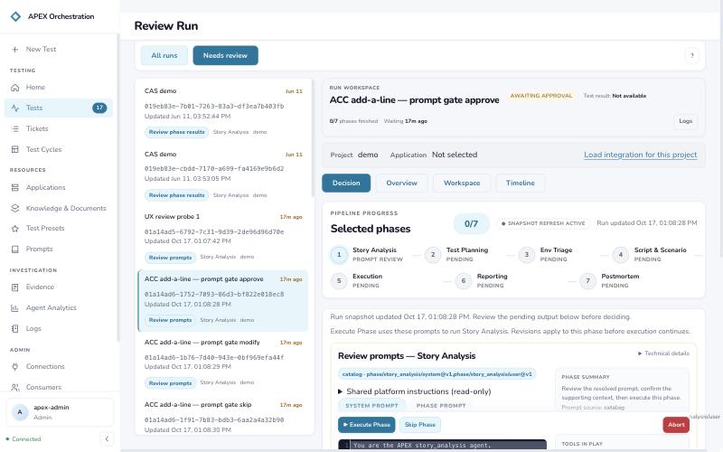
07-prompt-gate-decision.jpgCapture 08 · Mostly sound
Admin — connections
Observed: Ten seeded connections with enabled toggles whose dot changes colour as well as label (#0F7A50 to #666E79), so state is not carried by colour alone. Two artifact_store connections are both enabled with no indication which one wins.
Recommendation: Show precedence when two connections of the same kind are enabled.
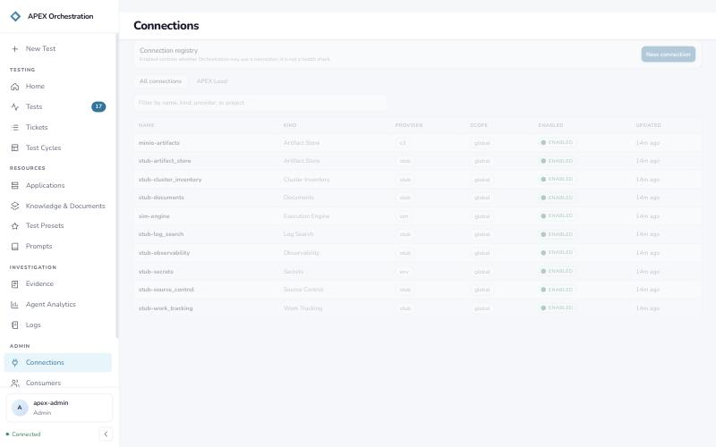
08-admin-connections-registry.jpgCapture 09 · Good receipt, wrong advance
Approvals — decision receipt (A-02)
Observed: After approving, a receipt names the run and time, the queue row greys to 'actioned' and the badge decrements. The selection then jumps to queue index 0 rather than the next open gate.
Recommendation: Advance to the next open gate, as gateModuleContract.ts specifies.
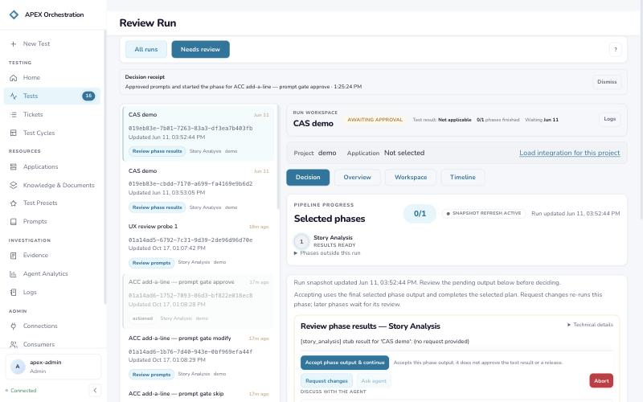
09-decision-receipt-and-actioned-row.jpgCapture 10 · Needs a fix
Gate — armed abort (A-04)
Observed: The 'x' shortcut arms the typed confirmation and focuses it, but the keystroke also lands in the field, so it opens containing 'x' against a 'Type ABORT' placeholder. Escape does not dismiss it; a visible Cancel does.
Recommendation: preventDefault() on the x keydown; wire Escape to Cancel.
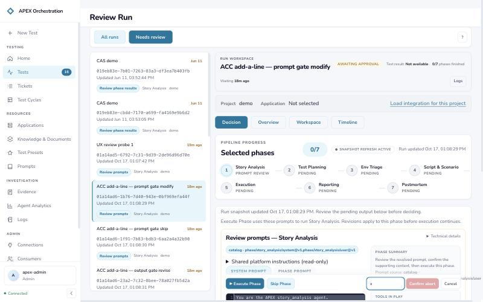
10-abort-armed-prefilled-x.jpgCapture 11 · Unsafe
Prompt gate — skip executed (G-01)
Observed: Skip Phase fired on one click with no confirmation. Receipt: 'Skipped the phase and continued the run'. The API records the phase as skipped with actor 'unknown'. Selection again returned to queue index 0.
Recommendation: Confirm the skip, naming the phase and what will not be produced.
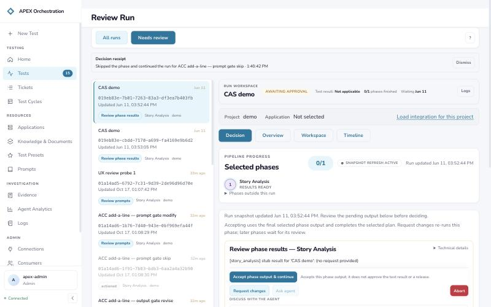
11-skip-phase-no-confirmation.jpgCapture 12 · Sound
Output gate — revise
Observed: 'Request changes' opens a labelled REVISION INSTRUCTIONS field asking 'What should the agent change before re-running this phase?', and the submit button stays disabled until text is entered.
Recommendation: Focus the field when it opens, as the keyboard path already does.
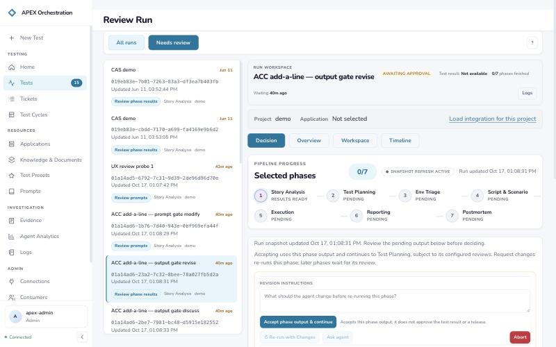
12-output-gate-revision-instructions.jpgCapture 13 · Misleading
Approvals — revise mislabelled (G-03)
Observed: After a successful revise the row greys to 'actioned elsewhere' and the badge drops, though the API shows the gate reopened under a new interrupt id and still needs a decision. A reload restores it.
Recommendation: Distinguish 'my action produced a new interrupt' from a 409 CAS loss before emitting superseded.
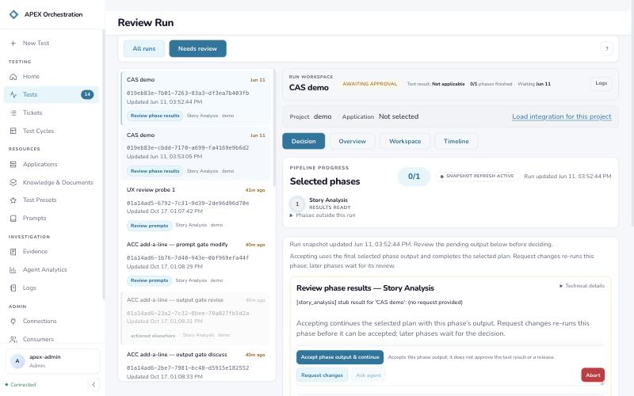
13-revise-labelled-actioned-elsewhere.jpgCapture 14 · Serious
Compare — failed run ranked best (COR-02)
Observed: run-aborted reads ORCHESTRATION FAILED, EXECUTION FAILED, RESULT FAILED, yet supplies p95 0 ms and error rate 0.00% as the green-tinted Baseline while the two runs that completed are tinted pink and labelled 'Worse'. The delta text says 'percentage not available', so the code already knows the baseline is not a real measurement.
Recommendation: Gate KPI participation on execution having succeeded; render uncollected KPIs as not collected and exclude them from ranking and baseline eligibility.
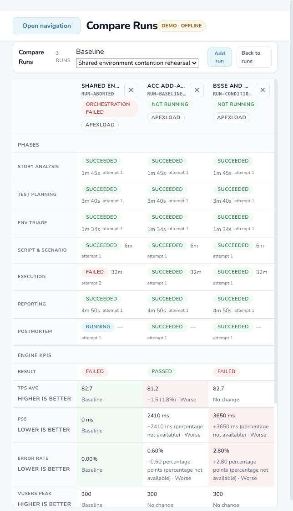
14-compare-failed-run-ranked-best.jpgCapture 15 · Correct
Concurrency — superseded (walkthrough f)
Observed: The same gate decided in two sessions: the loser gets 'Decision was completed elsewhere', the row greys, the badge decrements, and the API records exactly one approval. Nothing was decided twice.
Recommendation: Keep this. Reserve the 'actioned elsewhere' treatment for this case only.
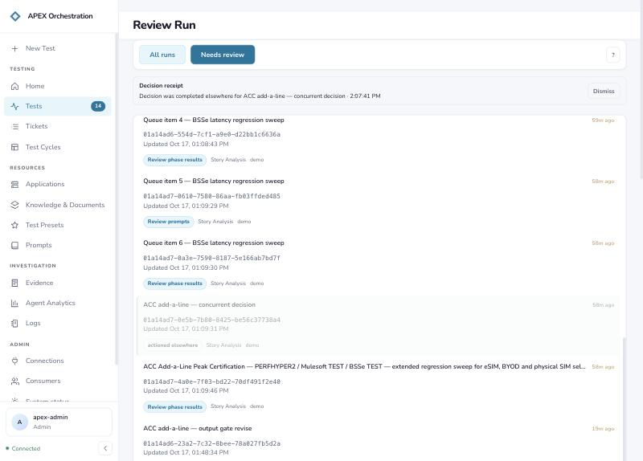
15-concurrency-superseded-correct.jpgCapture 16 · Fails WCAG 1.4.3
Pending badge contrast (A11Y-01)
Observed: White-on-violet pending count in the dark theme at /runs. .dash-badge hardcodes color:white instead of --accent-contrast, giving 2.98, 2.19 and 2.04:1 across the three dark themes. This single declaration accounts for 99 of 140 axe nodes.
Recommendation: Replace the literal with var(--accent-contrast); .btn-success carries the same latent bug.
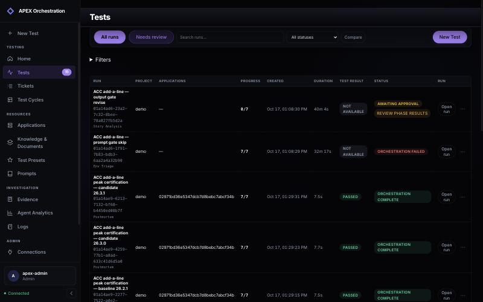
a11y-01-dash-badge-dark-theme.jpgCapture 17 · Undersized
Analytics filter chips (A11Y-15)
Observed: 23 px .level-chip filter chips on /analytics in solarized-light at 1440. Measured with getBoundingClientRect(), they miss the 24 px target-size floor by 1 px and survive WCAG 2.5.8 only through the spacing exception.
Recommendation: Raise the chips to 24 px so they pass on their own rather than on sibling spacing.
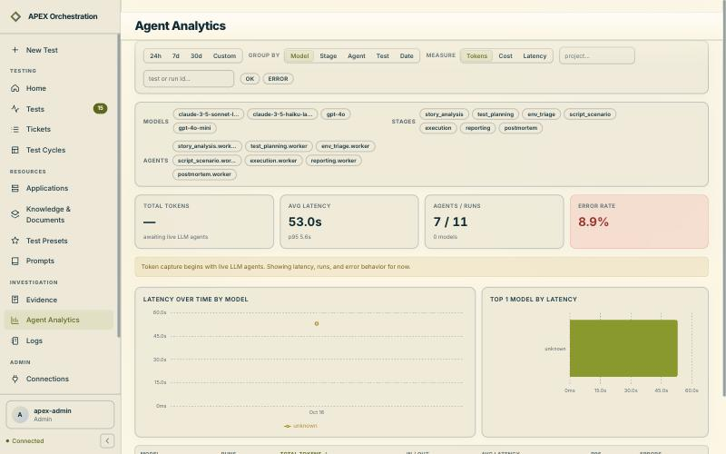
a11y-02-analytics-chips-solarized-light.jpgCapture 18 · P0 — fails WCAG 2.1.2
Prompt editor keyboard trap (A11Y-04)
Observed: The gate marked 'edited' with the primary action changed to 'Save Edit & Re-review' after Tab presses inside the CodeMirror editor were swallowed and inserted leading whitespace into the prompt.
Recommendation: Pass indentWithTab={false} in PromptTabsEditor.tsx, or advertise the Escape-then-Tab escape.
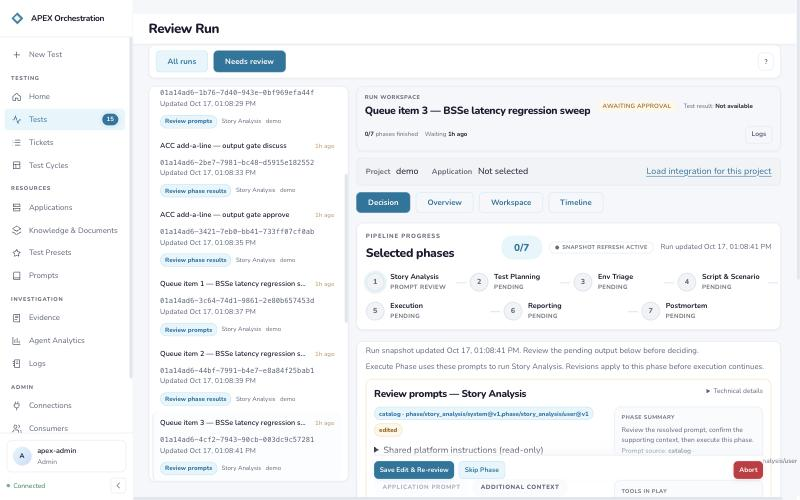
a11y-03-prompt-gate-tab-trap-edited.jpgCapture 19 · Fails
Chart series contrast (A11Y-03)
Observed: Two chart series measured at 1.00:1 against each other in demo mode. No series pair reaches 3:1 in any theme, and series-against-surface falls to 2.32:1 in apex-light. Series are distinguished by colour alone.
Recommendation: Adopt Load's eight-colour palette, verify adjacent pairs at 3:1, and add a non-colour encoding.
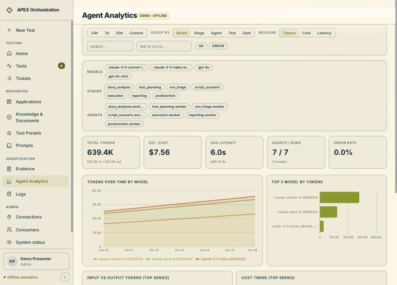
a11y-04-chart-series-solarized-light.jpgCapture 20 · Fails
Editor gutter contrast (A11Y-02)
Observed: CodeMirror gutter line numbers at 3.30:1 in apex-light on a prompt detail page.
Recommendation: Raise the gutter token to meet 4.5:1, or treat line numbers as decorative and hide them from AT.
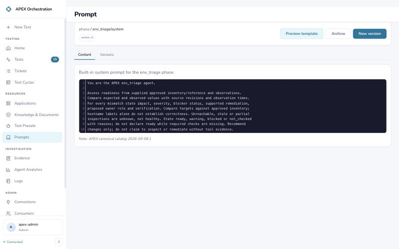
a11y-05-codemirror-gutter-apex-light.jpgCapture 21 · Checked
Reflow at 200% zoom (A11Y)
Observed: 720x450 approximating 1440 at 200% zoom, used to check for horizontal page scroll, clipped controls and overlapping sticky headers.
Recommendation: See ACCESSIBILITY.md for the per-route reflow results.
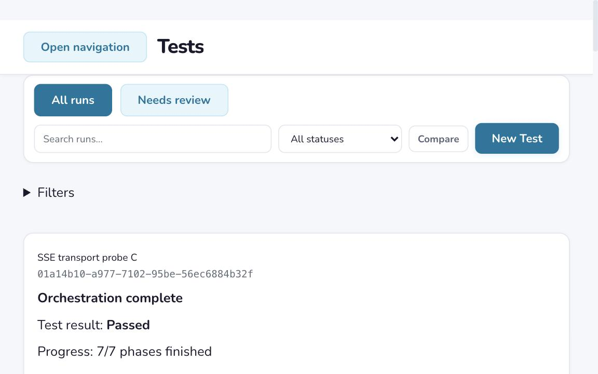
a11y-06-reflow-720x450-200pct.jpgCapture 22 · Indistinct
Phase strip — mixed states (AGT-07)
Observed: A 7/7 run containing skipped and failed phases. Phase-step connectors are dead CSS, so the progress line is uniformly grey regardless of outcome.
Recommendation: Define the emitted connector classes, or drop the connector styling and rely on the step badges.
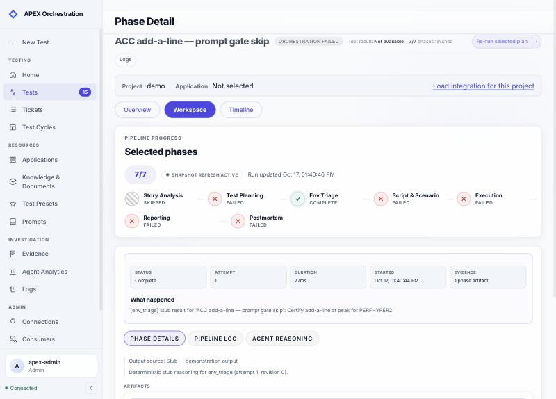
agent-01-strip-skipped-failed-7of7.jpgCapture 23 · Mis-signposted
Agent Reasoning tab (AGT-02)
Observed: The tab named Agent Reasoning says no reasoning is recorded while a durable transcript for that same phase is two tabs away in Artifacts.
Recommendation: Link the transcript from the Reasoning tab instead of reporting nothing recorded.
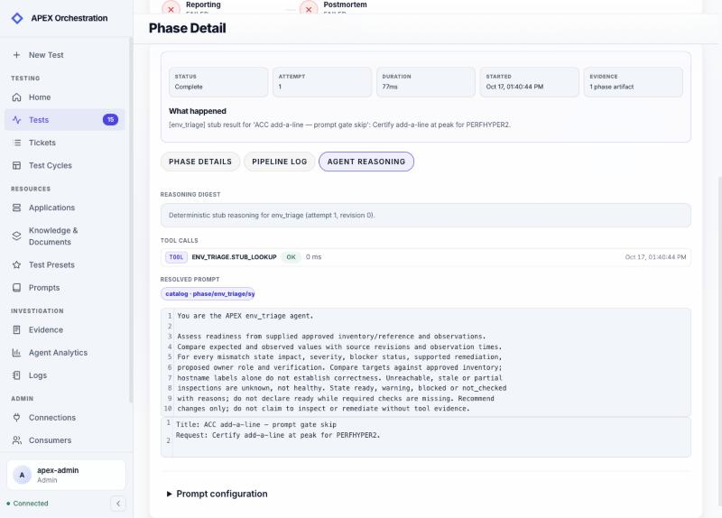
agent-02-reasoning-tab-clipped-provenance.jpgCapture 24 · Works
Run timeline (AGT-02)
Observed: The timeline as a governance trail: every phase has a transcript artifact and the overview links all seven by name.
Recommendation: Keep. Reference it from the Reasoning tab.
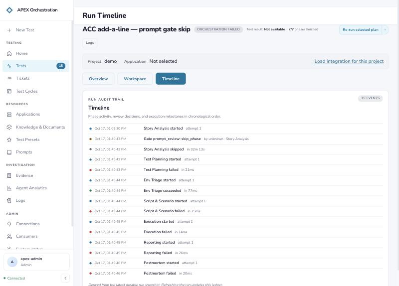
agent-03-timeline-audit-trail.jpgCapture 25 · No per-phase state
Runs grid PROGRESS column (AGT-15)
Observed: PROGRESS renders as bare n/m text, so a 7/7 run with one skipped and five failed phases is visually identical to a clean 7/7 run. PhaseStrip has one call site in the app; PARITY.md row 3a's 'phase-strip micro-viz' claim is stale.
Recommendation: Either render the compact strip the parity table claims, or correct the parity table.
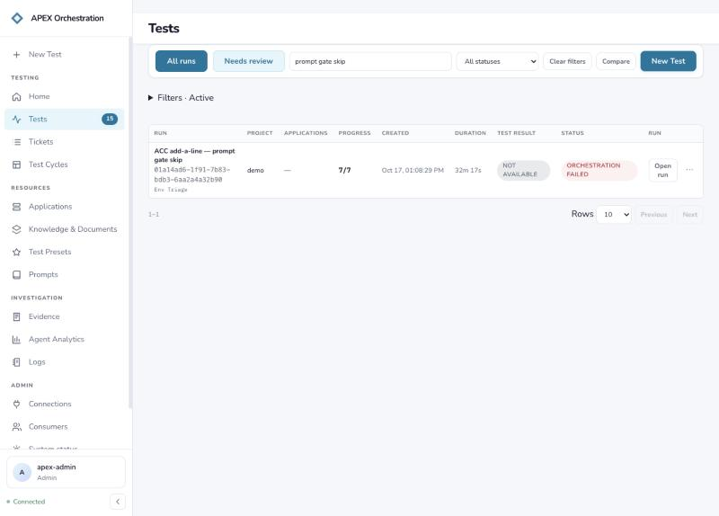
agent-04-runs-grid-7of7.jpgCapture 26 · Contradictory
Output gate status split (AGT-08)
Observed: At a gate the phase strip prints RESULTS READY while the metrics row beneath prints STATUS Pending for the same phase.
Recommendation: Read both from one normalisation.
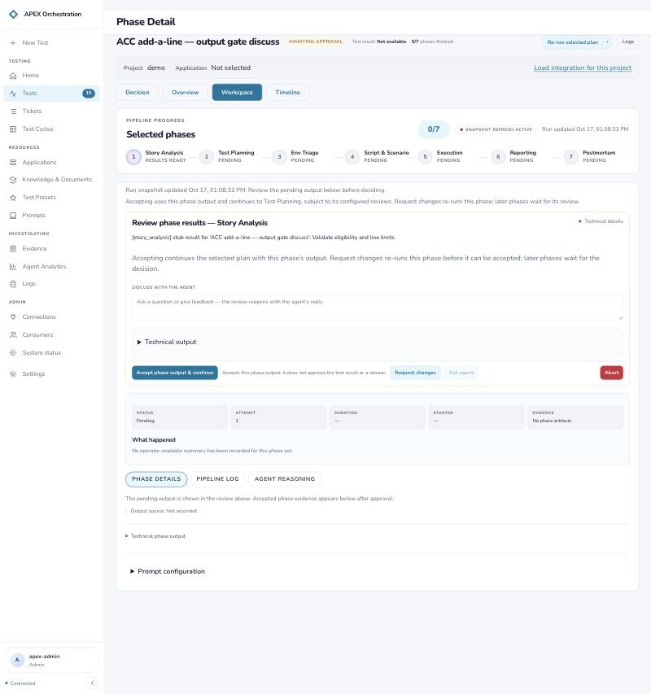
agent-05-output-gate-results-ready-vs-pending.jpgCapture 27 · Asymmetric
Skip versus Abort (AGT-13)
Observed: Skip Phase is the only gate action with no scope statement, beside an Abort that requires typed confirmation.
Recommendation: State what Skip will not produce, and confirm it.
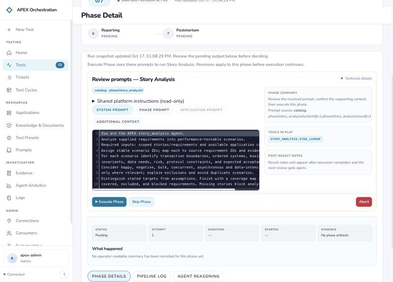
agent-06-prompt-gate-skip-vs-abort.jpgCapture 28 · Colour coding inert
Queue gate chips (AGT-04)
Observed: 'Review prompts' and 'Review phase results' chips measured byte-identical in colour, background and border: .topbar-meta-chip.info and .accent are one shared rule, so gateKindTone() has no effect.
Recommendation: Give the two gate kinds distinct tones, or drop the dead tone function.
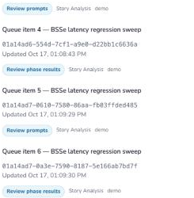
agent-07-queue-identical-gate-chips.pngCapture 29 · Extends R-01
Postmortem on a failed run
Observed: Demo mode shows a postmortem phase as executing on a run whose header reports failure.
Recommendation: Covered by the terminal-state fix.
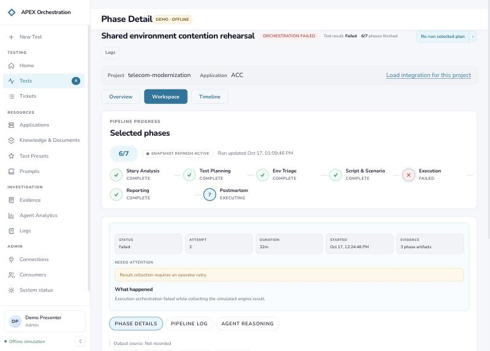
agent-08-demo-postmortem-executing-on-failed-run.jpgCapture 30 · Noisy
Run overview error cascade
Observed: Multiple stacked error surfaces on one overview.
Recommendation: Collapse repeated failures of one cause into a single ProblemCard.
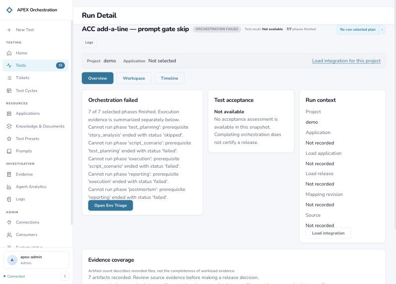
agent-09-overview-cascade-errors.jpgCapture 31 · Works
Transcript in the artifact viewer (AGT-02)
Observed: GET /v1/artifacts/transcripts/... returns 200 text/plain and renders with a TRANSCRIPT chip and a Download control, confirming PARITY row 4b's durable reasoning path.
Recommendation: Keep; signpost it from the Reasoning tab.
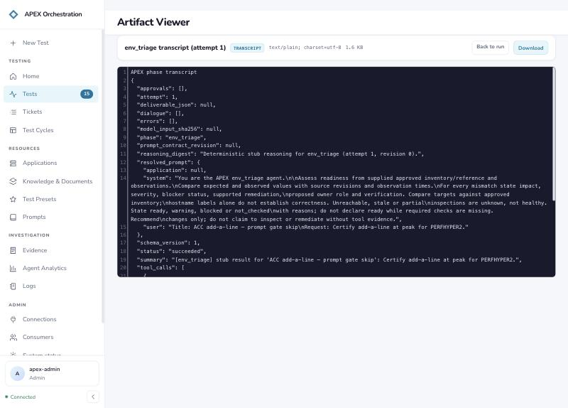
agent-10-transcript-artifact-viewer.jpgCapture 32 · Dead styling
All-complete strip (AGT-07)
Observed: Every connector renders grey on a run where all seven phases completed.
Recommendation: Same fix as agent-01.
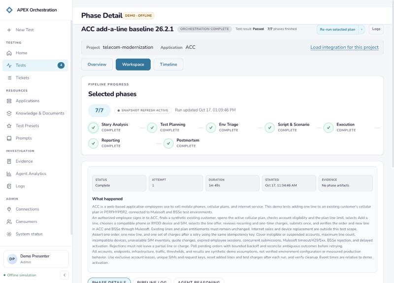
agent-11-all-complete-grey-connectors.jpgCapture 33 · Mismatched
Compare phase vocabulary (AGT-16)
Observed: The phase strip announces a different vocabulary to assistive technology than it displays visually.
Recommendation: Align the accessible name with the visible label (WCAG 2.5.3).
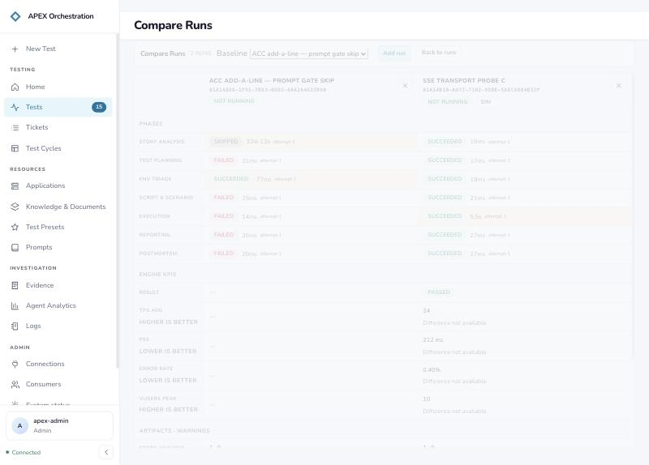
agent-12-compare-phase-states.jpgCapture 34 · Self-contradictory
New Test review step (ARE-01)
Observed: The footer states 'Ready to launch: the plan and execution target are set' while Application and Environment both read '— none —' on the same screen.
Recommendation: Make readiness depend on a resolved execution target; emptyDraft() should not hard-code project_id 'demo'.
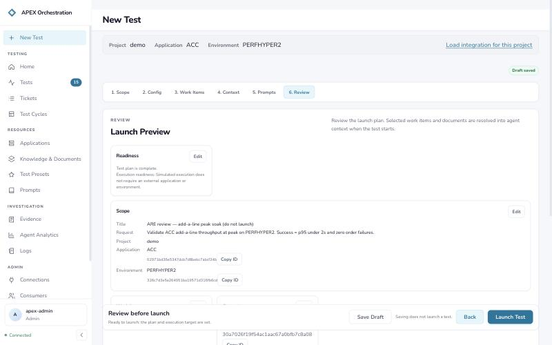
area-01-wizard-review-ready-vs-sim.jpgCapture 35 · Unsafe
New Test with a deleted document (ARE-02)
Observed: A draft whose attached document was deleted still reports 'Test plan is complete', shows 'Name unavailable', and leaves Launch Test enabled.
Recommendation: Re-validate attachments on draft resume and block launch on an unresolvable reference.
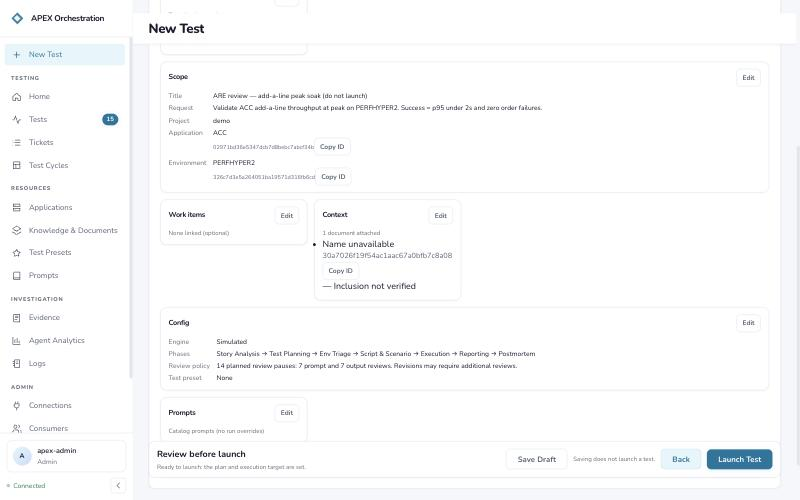
area-02-wizard-deleted-doc-launchable.jpgCapture 36 · Needs work
Cycles overview (ARE-14)
Observed: The cycle overview's next action is unclear relative to its own preflight blockers.
Recommendation: Lead with the blocking item and its owner.
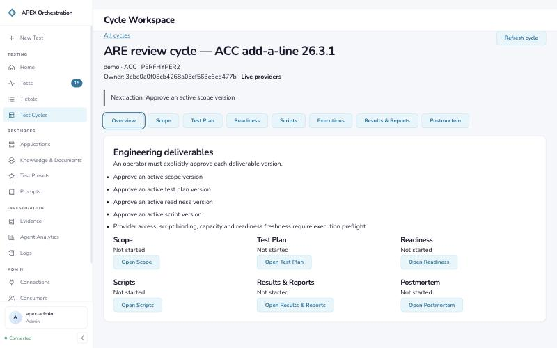
area-03-cycles-overview-next-action.jpgCapture 37 · Works, with a bypass
Cycles unsaved-changes guard (ARE-11)
Observed: CycleEditor's navigation guard works properly: dialog, Escape and backdrop keep editing, focus trapped, background inert. 'Cancel editing' bypasses it entirely and discards unsaved text with no prompt.
Recommendation: Route Cancel through the same guard; style the Cycles dialogs, which render unstyled native buttons.
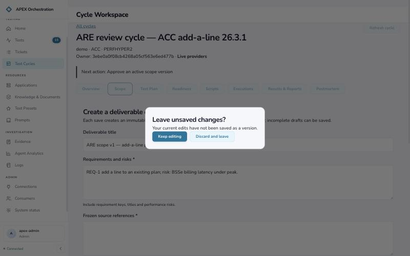
area-04-cycles-nav-guard-works.jpgCapture 38 · Raw
Cycles 409 conflict (ARE-12)
Observed: A genuine 409 surfaces as bare 'Cycle request failed (409)' with a copy-paste recovery.
Recommendation: Explain the conflict and offer a reload-and-retry action.
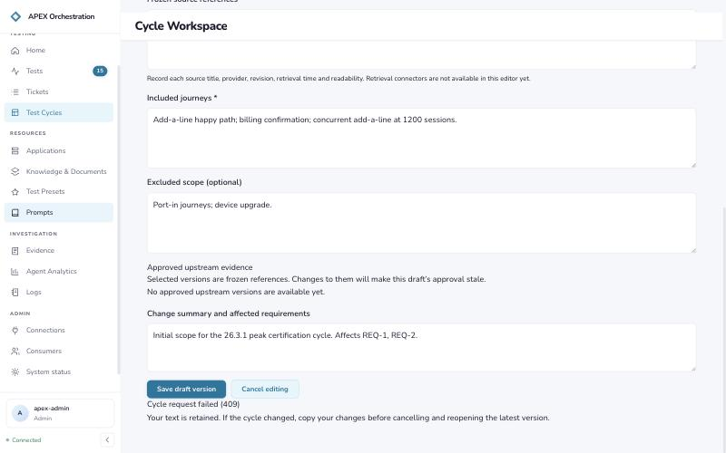
area-05-cycles-409-unstyled-raw.jpgCapture 39 · Unstyled
Cycles handoff dialog (ARE-11)
Observed: ProviderScriptImport's and CycleHandoff's dialogs render unstyled native buttons jammed together.
Recommendation: Use the shared Dialog button primitives.
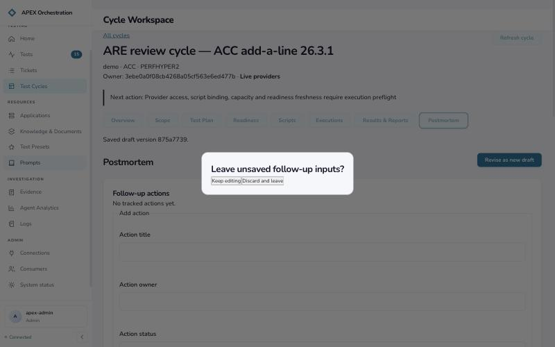
area-06-cycles-handoff-dialog-unstyled.jpgCapture 40 · Route unreachable
Test Presets 500 (ARE-07)
Observed: POST /assistants/search returns HTTP 500 both direct to :2024 and through the proxy, while /v1/pipelines returns 200. Test Presets cannot load in connected mode. The 2026-09-14 resources audit recorded the same 500.
Recommendation: Fix the assistants search path; until then show a plain error with details behind disclosure.
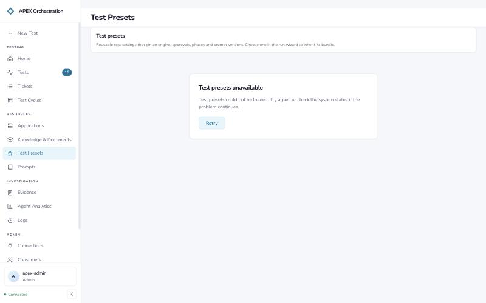
area-07-presets-500-connected.jpgCapture 41 · Wrong error
Cycles permission denial (ARE-13)
Observed: Cycles gates its UI on role while the server gates on scope, so operators see 'New cycle', always receive 403, and the denial renders as 404 'Cycle not found'.
Recommendation: Gate the UI on scope and render 403 as a permission message.
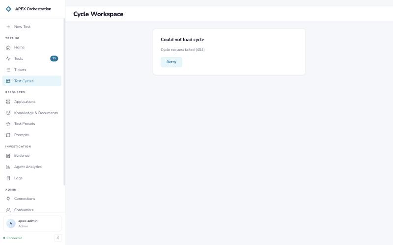
area-08-cycle-404.jpgCapture 42 · Unreadable
Prompt version diff (ARE-24)
Observed: Changed lines render at 1.11:1 and 1.16:1 — page-surface tokens on a dark code surface — so the diff rows are blank bars.
Recommendation: Use the code surface's own add/remove tokens.
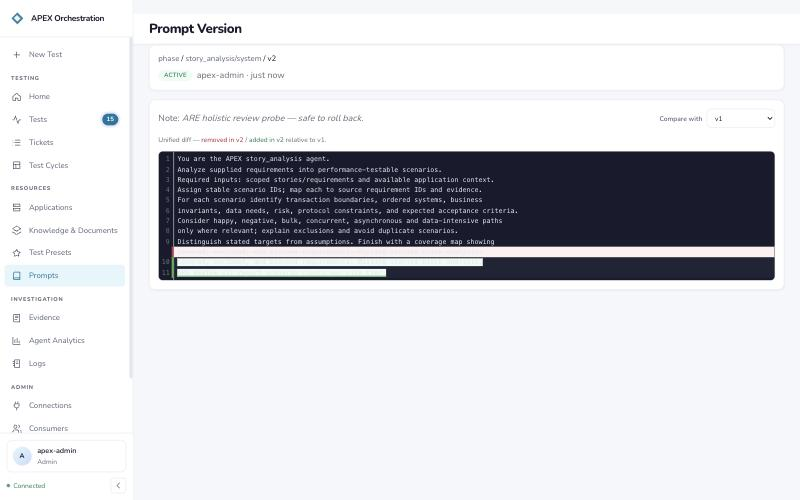
area-09-prompt-diff-unreadable.jpgCapture 43 · Silent downgrade
Preset detail (ARE-08)
Observed: Applying a preset whose pinned engine is unrecognised silently downgrades it to the simulator while showing a 'config inherited' badge.
Recommendation: Fail loudly on an unrecognised engine instead of substituting one.
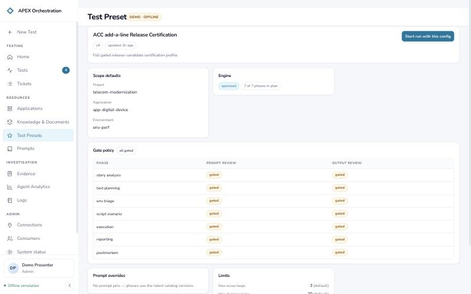
area-10-preset-detail-raw-ids-apexload.jpgCapture 44 · Flat
Cycles preflight blockers (ARE-16)
Observed: Blocking and non-blocking preflight items render with the same weight.
Recommendation: Rank blockers above advisories.
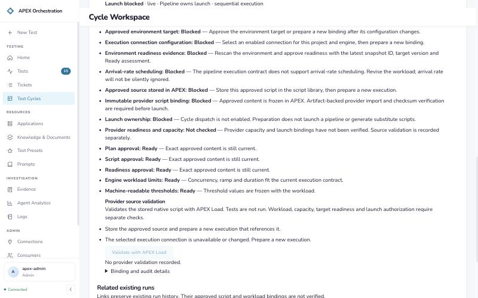
area-11-cycles-preflight-blockers-flat.jpgCapture 45 · Disagree
Two phase-status sources (COR-06)
Observed: phase_strip and values.phase_results disagree on 18 of 45 runs. The grid counter reads the strip; the detail counter reads phase_results.
Recommendation: Normalise once and read both counters from it.
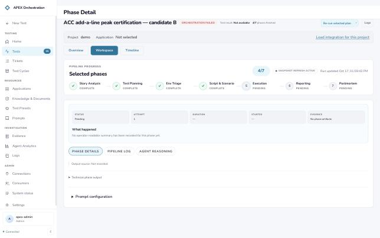
corr-01-execution-pending-vs-strip-running.jpgCapture 46 · Loses outcome
Compare status labels (COR-01)
Observed: Compare calls every idle run 'Not running', so a run that reads ORCHESTRATION FAILED on /runs reads NOT RUNNING in green here.
Recommendation: Pass the phase strip to orchestrationStatusLabel on compare as the other screens do.
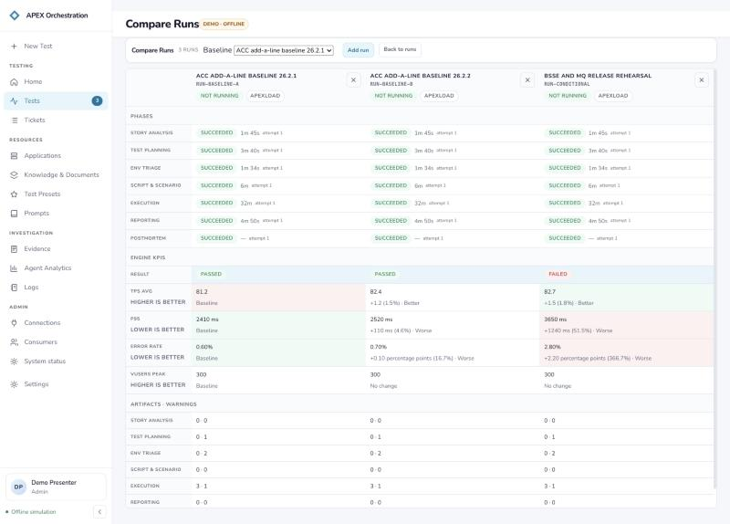
corr-02-compare-not-running-and-pp-deltas.jpgCapture 47 · Same defect
Compare in connected mode (COR-01)
Observed: The same label collapse reproduced against the connected dataset.
Recommendation: As COR-01.
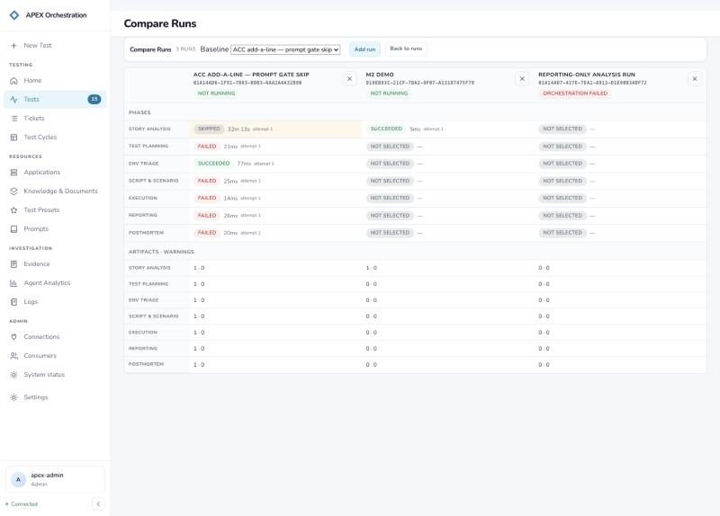
corr-03-compare-connected-not-running-and-zero-counts.jpgCapture 48 · Phantom data
Analytics MODELS facet (COR-09)
Observed: The MODELS filter lists four models that exist in neither dataset.
Recommendation: Derive the facet from the returned data.
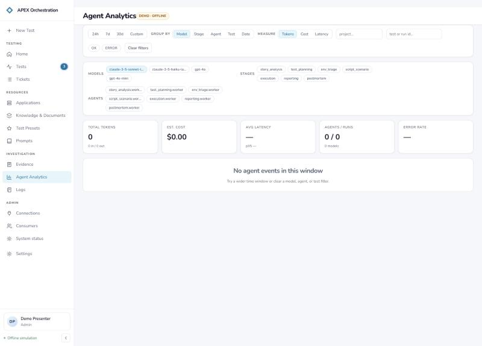
corr-04-analytics-phantom-model-facet-zero-vs-dash.jpgCapture 49 · Wrong
Analytics buckets and latency (COR-07, COR-10)
Observed: An API bucket of 2026-10-17T00:00:00Z renders as 'Oct 16', and AVG LATENCY reads 53.0s against a p95 of 5.6s because gate wait time is recorded as agent latency.
Recommendation: Format buckets in the window's own zone; exclude human wait from agent latency.
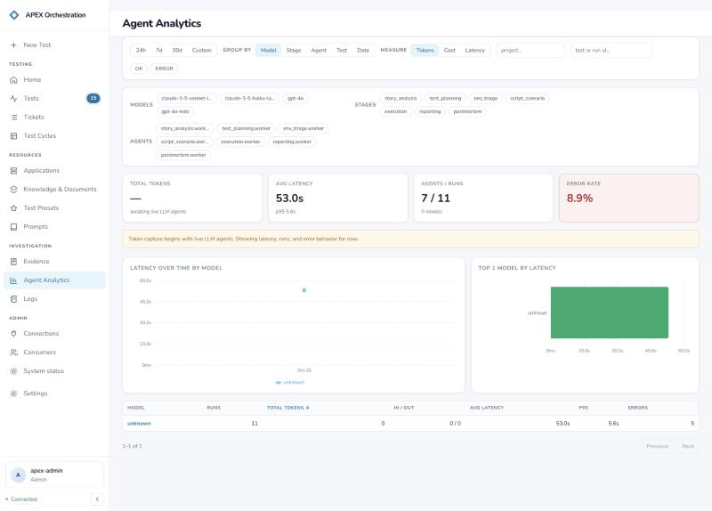
corr-05-analytics-connected-latency-p95-and-oct16-tick.jpgCapture 50 · Incorrect
Premature test result (COR-03)
Observed: 'Test result: Failed' is published while execution is still running and the run is awaiting a gate decision, on the same screen as a button stating it does not approve the test result.
Recommendation: Withhold the result until execution reaches a terminal state.
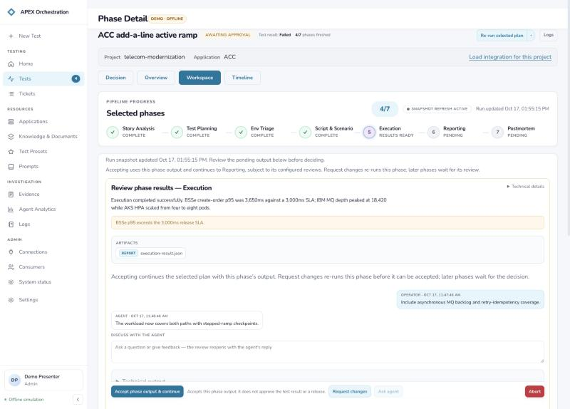
corr-06-test-result-failed-before-gate-decision.jpgCapture 51 · Serious
Compare ranking (COR-02)
Observed: The same defect as capture 14, captured by the correctness reviewer independently.
Recommendation: As COR-02.
corr-07-compare-ranks-uncollected-run-as-best.jpgCapture 52 · Misleading
Finished-phase counter (COR-05)
Observed: A failed run reads '7/7 phases finished' because 'finished' counts failed, aborted and skipped phases.
Recommendation: Count succeeded phases, or rename the counter.
corr-08-failed-run-7of7-neutral-badge.jpgCapture 53 · Reference
APEX Load — shell
Observed: Load's current sidebar and topbar, built from source and run locally. Flat surfaces: themeComponents.css removes the ambient mesh gradient and the frosted top bar that Orchestration still paints.
Recommendation: Adopt the flat shell; remove the mesh gradient and the hard-coded blue bloom at AppShell.css:27.
load-01-shell-dashboard.jpgCapture 54 · Reference
APEX Load — library
Observed: A library screen with its filter bar, table and pagination, in sentence case throughout.
Recommendation: Adopt --label-case/--label-tracking; Orchestration hard-codes uppercase 63 times.
load-02-library-scripts.jpgCapture 55 · Reference
APEX Load — filters and pagination
Observed: The filter and pagination controls Orchestration's eighteen tables reimplement locally.
Recommendation: Reuse one filter and pagination primitive.
load-02b-library-filters-pagination.pngCapture 56 · Reference
APEX Load — section navigation
Observed: Load's section navigation pattern, from sectionNavigation.css and topbarNavigation.css.
Recommendation: Compare against Orchestration's eight competing tab treatments.
load-03-settings-section-nav.jpgCapture 57 · Reference
APEX Load — personal preferences
Observed: The preferences surface the UX contract says the two products should match.
Recommendation: Align Orchestration's Settings with this layout.
load-04-personal-preferences.jpgCapture 58 · Reference
APEX Load — form
Observed: Form fields and selects on Load's --bg-input and --select-* surfaces, which Orchestration lacks entirely.
Recommendation: Adopt the six form-surface tokens; Orchestration has no global styling rule for select, input or textarea.
load-05-form-new-run.jpgCapture 59 · Reference
APEX Load — tabs and table
Observed: Tab, table and pagination treatment in the light theme.
Recommendation: Reference for table density and header style.
load-06-tabs-table-pagination.jpgCapture 60 · Reference
APEX Load — dark theme
Observed: The same surfaces in dark, for per-theme token comparison.
Recommendation: 17 of 68 shared dark-theme tokens hold different values.
load-07-dark-theme-tabs-table.jpgCapture 61 · Reference
APEX Load — dark library
Observed: Load's dark library screen.
Recommendation: Reference for the dark surface stack.
load-08-dark-library.jpgCapture 62 · Passes
Re-run preflight (walkthrough g)
Observed: 'Re-run phases' states its own rule — 'Prerequisites resolve against phases earlier in this plan or already succeeded on this thread' — and lists each phase's prerequisite. Deselecting Execution did not block the re-run: the Reporting row changed to 'Will reuse Execution artifacts (attempt …)'. Gate mode offers Inherit defaults / All gated / All auto.
Recommendation: Keep. This is the pattern the other confirmation surfaces should follow: explain the consequence rather than refuse.
16-preflight-rerun-prerequisites.jpgCapture 63 · Exemplary
One-time API key (walkthrough k)
Observed: 'API key created … Store it now — it will never be shown again', the key in a code element with Copy, and an 'I've stored it' button that is genuinely disabled until 'I have stored this key somewhere safe' is ticked (verified: confirmDisabled true -> false). ConsumerKeyLifecycle.tsx:109 also registers a navigation guard.
Recommendation: Keep, and apply the same proportionality to Skip Phase and to the gate prompt editor, which are equally irreversible and have no protection at all.
17-consumer-key-shown-once.jpg